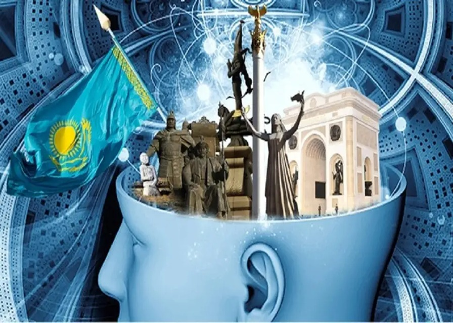

10-ТАПСЫРМА
Жаһандану және ұлттық құндылықтар
I. Теория
Мақсаты: Жаһандану үрдісі туралы мағлұмат беру, түсінік қалыптастыру. Жаһандану үрдісінің пайдасы мен зиянын көрсету.
Міндеттері: Ұлттық құндылықтары мен нормаларын, сонымен бірге жалпыадамдық мәдени бағдарларды өзінде жинақтайды.
Бағалау критерийлері: Мәтіннің жанрлық ерекшеліктерін талдайды; Оқылым және тыңдалым материалдары бойынша негізгі ақпаратты іріктеп жазады.
Дәрістің қысқаша тезистері
Жаһанданудың жойқын толқынында жаңқадай жұтылып кетпеу үшін өрелі халықтар өздерінің ұлттық кейпін сақтап қалудың қамын ойлап, амал-әрекет жасауда. Жаһандануға үйлесімді кірігу дегеніміз – ана тілі, ұлттық сана, озық салт-дәстүр мен тарихи танымыңды сақтай отырып, адамзаттың алдыңғы қатарлы мәдениетін солармен үйлестіре қабылдау арқылы әлемдік қауымдастықтан өз орныңды табу деген сөз. Бұған қазақ тілі мен әдебиетін оқытудың сапасын арттыру, салт-дәстүр мен тарихи зердені нығайту арқылы қол жеткізуге болады. Елбасымыз өзінің «Қазақстандық жол» еңбегінде жаһандану жағдайында ұлтты сақтап қалатын бәсекеге қабілеттілік сапа туралы былай деп жазады: «Бәсекеге қабілетті тұлға, алдымен, өз халқының мәдениеті мен тілін білуі керек. Туған тілдің мәдени бастаулары мен рухани дәстүрлерін сақтау жас ұрпақтың бойында жаһанданудың барлығын жұтатын, бірыңғайлайтын және кіріктіретін үрдістеріне қарсы тұра алатындай иммунитеттің қалыптасуына көмектеседі».

Жаһандану үрдісі және ұлттық құндылықтар
Қай халықтың болмасын, өзге жұртқа ұқсамайтын бөлек болмыс-бітімін даралап, өзіндік тағдырын айқындайтын басты белгілері – ана тілі мен әдебиеті, салт-дәстүрі, өнері мен мәдениеті. Ана тілі мен ұлттық әдебиет – ұлттың өткен тарихы мен бүгінгі тағдырының сабақтастығын орнықтыруда, тұлғааралық мәдени қарым-қатынас орнатуда, жастарды отансүйгіштікке тәрбиелеуде басты құрал. Сонымен бірге әдебиет – ұлттың рухани жады, адамзат дамуының қозғаушы күші және тарихи-көркем баяны. Сол мол мұраны жас жеткіншектерге меңгертуде қазақ тілі мен әдебиеті.
Ана тілі мен ұлттық әдебиет – рухани жадымыз
Бақылау сұрақтары:
- «Құндылық» дегенді қалай түсінесіңдер?
- Қазіргі қоғамдағы басты құндылықтарды атаңдар.
- Ұлттық құндылықтар қаншалықты маңызды?
- Ғылым дамуының басым бағыттарына көзқарастарың қандай?
- Жаһандану үрдісіндегі жастардың үлесі қандай? ҚР статистика агенттігінің мәліметтеріне сүйене отырып, жауап беріңдер.
- Бәсекеге қабілетті маман, ғылыми жаңашылдықтардың авторы болу үшін қандай ғылым саласын таңдайсыңдар?
Тапсырманы орындау бойынша нұсқаулық (орындау тәртібі):
- Мәтінді түсініп оқиды, түсінгенін айтады;
- Сұрақтарға жауап береді.
Тапсырмадан күтілетін нәтиже: Берілген ақпаратты оқиды, сұрақтарға жауап береді.
Тапсыру формасы: Ауызша түрде.
Модуль / пән бойынша ұсынылатын әдебиеттер тізіміне сілтемелер: Okulyk.kz - Қазақ тілі (10-сынып)
II. Практика (СӨЖ № 10.2)
1-тапсырма. Шахмат аты тәсілі
Тапсырма: Шахмат аты секілді жүріп отырып, Ғ.Мүсіреповтің ана тілі туралы айтқан ұлағатты сөзін оқыңдар.
Нұсқаулық: Кестеде жасырылған ұлағатты сөзді табады.
2-тапсырма. «Дербес пікір» айту тәсілі
Тапсырма: Қазақ тілі туралы ұлт зиялыларының нақыл сөздерімен танысып, «Дербес пікір» айту тәсілі бойынша өз пікірлеріңді айтыңдар.
Пікір құрылымы:
- Өзіндік пікір (ой, идея) – 1 сөйлем
- Дәлел – 2 сөйлем
- Өз пікірін айғақтайтын мысал – 2 сөйлем
- Өз пікіріне қарсы дәлел – 1 сөйлем
- Қарсы дәлелді жоққа шығаратын мысал – 1 сөйлем
- Қорытынды – 2 сөйлем
3-тапсырма. Эссе жазу
Тапсырма: «Ұлттық құндылықтар – ел бірлігінің негізі» тақырыбында келісу/келіспеу эссесін жазыңдар. Сөз саны – 80–100.
Нұсқаулық: Эссе мазмұны мәлімделген тақырыпқа сәйкес болады; жұмыста автордың көзқарасының болуы шарт; барлық тұжырымдар негізделіп, дәлелденуі керек.
Тапсыру формасы: Жазбаша түрде.
Модуль / пән бойынша ұсынылатын әдебиеттер тізіміне сілтемелер: Okulyk.kz - Қазақ тілі (10-сынып)
III. Бағалау парағы
| № | Тапсырма | Дескрипторлар | Ұпай саны | Студенттің ұпай саны |
|---|---|---|---|---|
| 1 | Бақылау сұрақтары: |
• Мәтінді түсініп оқиды, түсінгенін айтады; • Сұрақтарға жауап береді |
10 балл 10 балл |
|
| 2 | Шахмат аты секілді жүріп отырып, Ғ.Мүсіреповтің ұлағатты сөзін оқу. | • Кестеде жасырылған ұлағатты сөзді табады | 5 балл | |
| 3 | Қазақ тілі туралы ұлт зиялыларының нақыл сөздерімен танысып, «Дербес пікір» айту. |
• Нақыл сөздерді оқиды; • Мағынасын ашады; • Кестені толтырады |
5 балл 5 балл 5 балл |
|
| 4 | «Ұлттық құндылықтар – ел бірлігінің негізі» тақырыбында келісу/келіспеу эссесін жазу. (80–100 сөз) |
• Эссе мазмұны мәлімделген тақырыпқа сәйкес болады; • Жұмыста автордың көзқарасының болуы шарт; • Барлық тұжырымдар негізделіп, дәлелденуі керек |
20 балл 20 балл 20 балл |
|
| Барлығы: | 100 балл | / 100 | ||